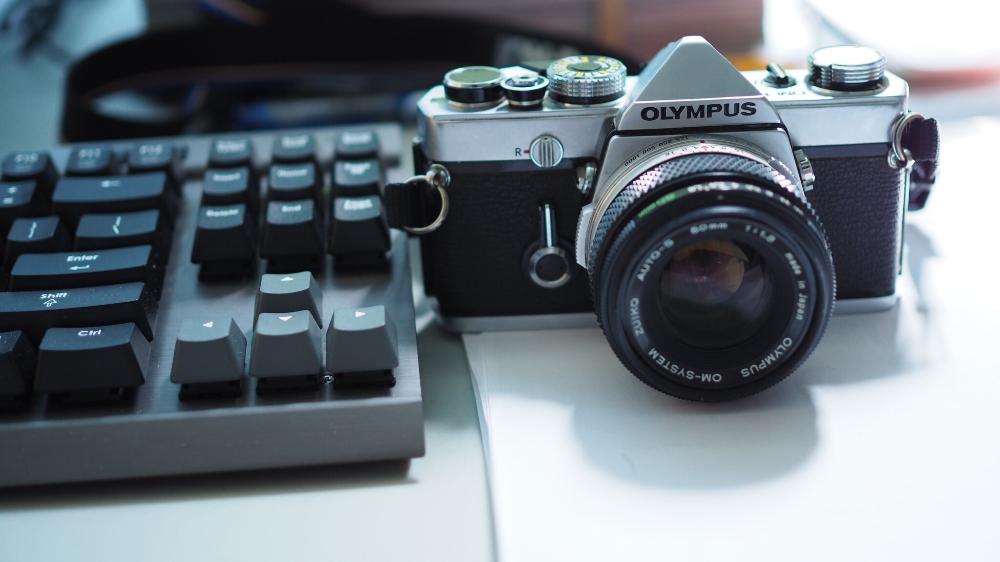

Back to the Basics
I, along with my roommates took a trip to Charleston last weekend. After one of us having passed dissertation defense, another one having crushed a job, we think we deserve it.
Color is vibrant there. Beautiful streets and houses whisper their rich history.
The absolute best experience is watching sunrise on the beach. I cannot remember when I saw a sunrise last time, neither how it feels.
But I was shocked. I feel so tranquil and soulful. It is truly a spiritual moment, like looking through a viewfinder instead of LCD screen.
The rising is also transient, which both happened and disappeared faster than I realize. It reminds me of the childhood desire to grow bigger, simply to play basketball with taller kids. And here I am, in the blink of an eye.
Recently I bought a fully mechanical film camera -- Olympus OM1. Its beauty and simplicity amazed me. It is fully functional, and solid. Compared to this, modern digital cameras are more of a computer, not to say it's a bad. However, the tactile feeling of mechanical shutter, advance lever, film rewind do make me feel intimate to this handsome machine.
Above all, it brings me back to the basics of photo taking -- an activity of collecting light, and the principle is trivial. The film speed cannot be modified (let's not get into pushing / pulling films), shutter speed and aperture are all that we care. The design also stresses the importance of simple and intuitive interface. Since there is no screen or display, both shutter speed and aperture must be obvious by reading the markings on the camera body.
The camera excites me every time I hold it. It is truly an inspiration.